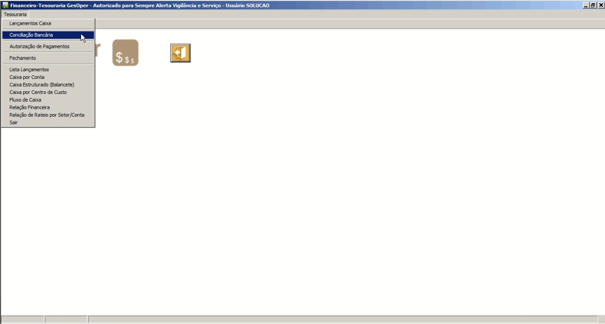

O que é a Conciliação Bancária?
Toda vez que uma conta banco é movimentada através do fluxo de caixa, ela mantém um registro dentro do módulo administrativo para posterior validação junto ao arquivo de extrato (OFX) gerado a partir do banco, esse processo de validação de lançamentos chamamos de conciliação bancária. Para acessar o programa de conciliação bancária, abra o menu “Tesouraria” e em seguida “Conciliação bancária”. Inicialmente, para realizarmos a conciliação bancária, dependemos de um arquivo de conciliação bancária, este arquivo deve ser obtido através do site do banco, normalmente, o processo financeiro de conciliação bancária sempre é realizado sob o dia anterior ou sob a semana anterior. O primeiro passo é definir a data, nos campos Data inicial e Data final em que iremos realizar a conciliação, obter junto ao banco o arquivo OFX dentro do período onde iremos realizar a conciliação bancária, clicar no botão“ImportarOFX”e depois clicar no botão“Pesquisar”. Noladoesquerdo, Extrato Bancário é exibido as informações das operações que foram importadas via arquivo OFX e nolado direito, Gesoper ADM os lançamentos realizados no fluxo de caixa para a conta selecionada para poder conciliar. No lado esquerdo ainda, é possível selecionar todos ou alguns registros e se for preciso, excluir estes lançamentos, através do botão“Excluir Lançamento”para poder por exemplo, importar novamente o arquivo ofx. Existe também a possibilidade, de lançar um estorno através do botão “Estornar Selecionados”e desfazer este lançamento, botão “Desfazer Estorno”estas duas opções são usadas em casos específicos, onde o banco lança algum registro indevido e não faz automaticamente o lançamento deste estorno no extrato bancário. .
Procedimentos
- Acesse o menu Financeiro >Tesouraria> Conciliação.
- Escolha o período desejado.
- Importe o extrato bancário em formato compatível.
- Compare os lançamentos e identifique divergências.
- Ajuste ou registre lançamentos conforme necessário.
Exemplos de Tela
